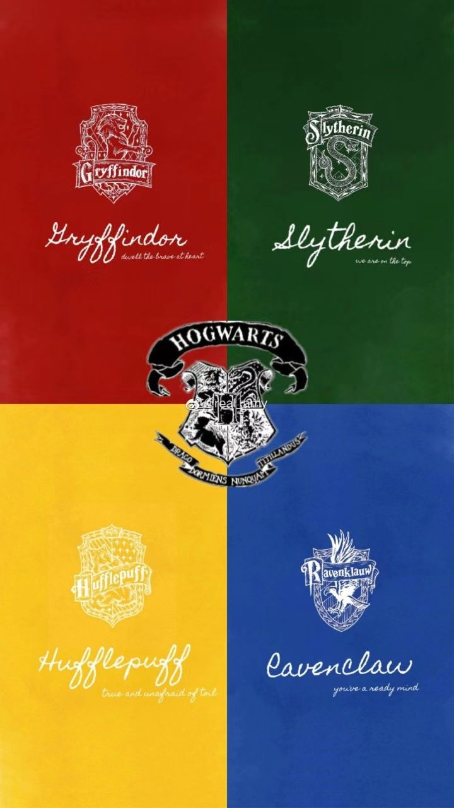

欢迎来到霍格沃茨
学院介绍:
赫奇帕奇
:霍格沃茨魔法学校的四大学院之一，赫奇帕奇以特别擅长与食物有关的咒语而闻名，也许是霍格沃茨魔法学校的四大学院里拥有学生最多，最好心的学院了。
格兰芬多:霍格沃茨四学院之一。始建于9世纪。用创办人戈德里克·格兰芬多的姓氏命名的。据说只有真正的格兰芬多才能把戈德里克·格兰芬多剑从分院帽中拔出。
拉文克劳:霍格沃茨魔法学校的四大分院之一，象征四大元素中的风。由罗伊纳·拉文克劳创立，以智慧聪敏作择生条件。
斯莱特林:霍格沃茨的四大学院之一。创始人为四巨头之一的萨拉查·斯莱特林。
热点嗅嗅：
哈利波特
魔法部部长赫敏
第二次巫师大战
第一个与麻瓜结婚的巫师
